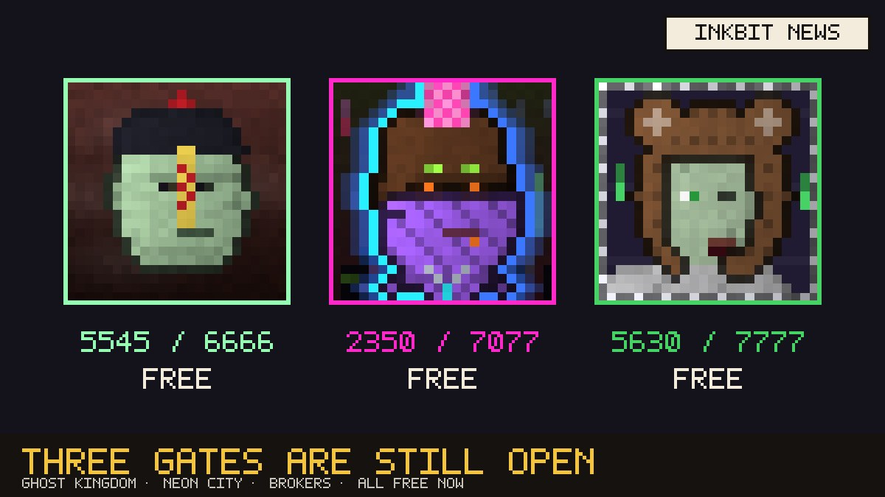
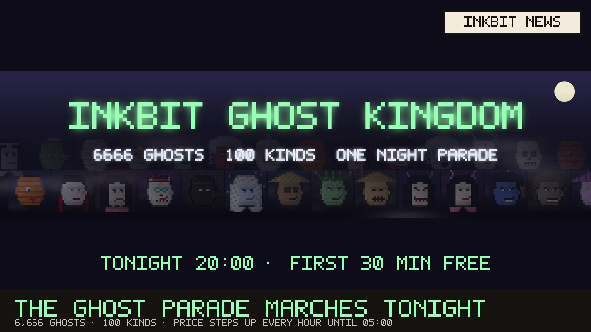
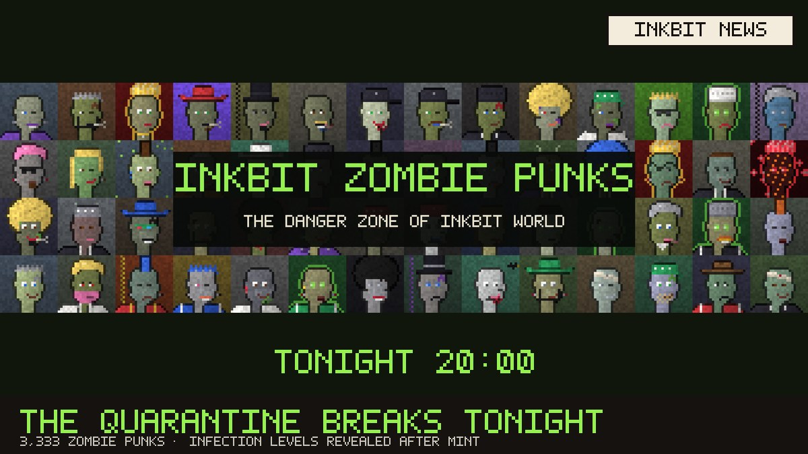
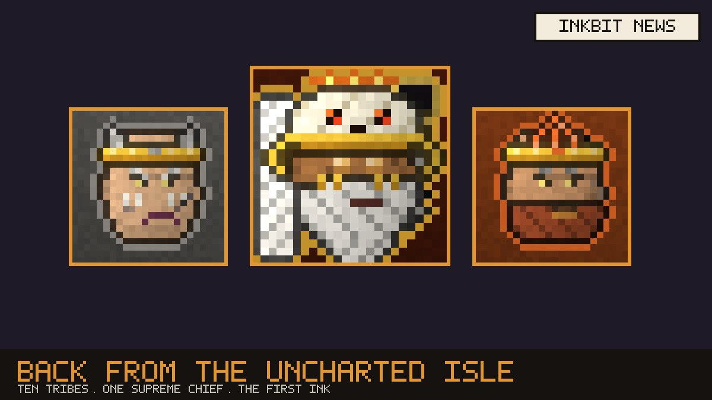
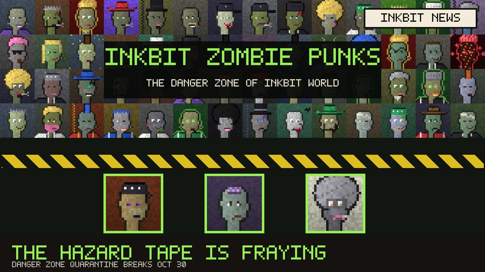
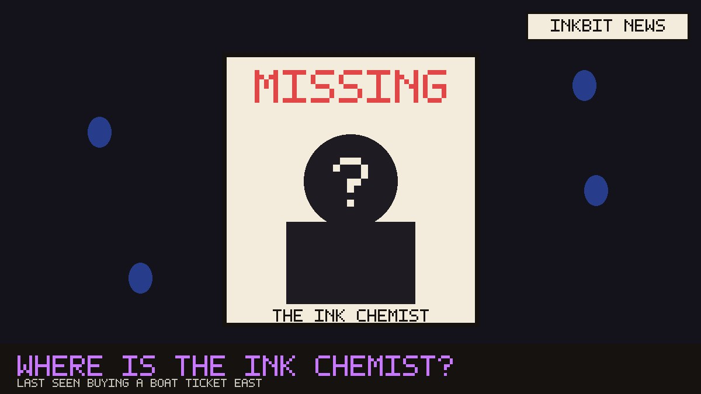

Kingdom report
Three gates are still open, and all of them are free
Nov 3, 2026

The ghost parade on the Haunted Hills has grown to 5,545 of 6,666 ghosts, and joining is now free, ten per wallet, until November 4 at 20:00. Neon City has 2,350 citizens and is also free until November 4 at 11:43. Ink Street has hired 5,630 brokers in its free final round, which closes on November 6 at 11:56.
Elsewhere, the Danger Zone is full: all 3,333 Zombie Punks have shuffled out, into 418 households. The reprint at the old print shop has closed at 167 Apes.
The Haunted Hills
The ghost parade marches tonight
Oct 30, 2026

Lanterns are going up on the Haunted Hills. Tonight at 20:00 the Inkbit Ghost Kingdom begins its night parade: 6,666 ghosts of one hundred kinds, from Krasue and Jiangshi to Kappa, Vampires and Catrinas.
The first half hour is free. After that the price climbs every hour, about $0.03, then $0.06, $0.09 and finally $0.12 until the parade ends at 05:00. Somewhere in the fog walk one Ghost Emperor, three Underworld Judges and six Clan Kings, and nobody will see their faces until the reveal.
The same night, the quarantine around the Danger Zone breaks. It is going to be a long night in the Kingdom.
The Danger Zone
The quarantine breaks tonight at 20:00
Oct 30, 2026

The hazard tape around the Danger Zone is down to its last threads. At 20:00 tonight the gates open and 3,333 Inkbit Zombie Punks shuffle out, from Fresh Bites to Patient Zeros.
Every punk's infection stage stays hidden until the reveal. Residents of the Pet Meadows are once again asked to keep their pets indoors.
The Uncharted Isle
Explorers return from the Uncharted Isle
Oct 27, 2026

A boat came back from the far east of the map this week, carrying sketches of an island nobody ever finished drawing: volcanoes, caves, campfires and ten tribes.
The explorers say the islanders call themselves the Wild Ones, and that they made the very first ink. If that's true, they may also know how to make Pure Ink, the only rumoured cure for Inkrot.
The Danger Zone
The hazard tape is fraying
Oct 26, 2026

Guards at the Danger Zone border report that the hazard tape is fraying faster than expected. The quarantine is now expected to break on October 30 at 20:00.
Residents of the Pet Meadows are asked to keep their pets indoors.
Missing person
Where is the Ink Chemist?
Oct 25, 2026

The Ink Chemist, the ape on Press Card 07, hasn't been seen at the print shop in days. The lab was left open, with blue ink drops leading to the harbour.
A ticket seller says the Chemist bought a single boat ticket, heading east. Towards the Uncharted Isle.